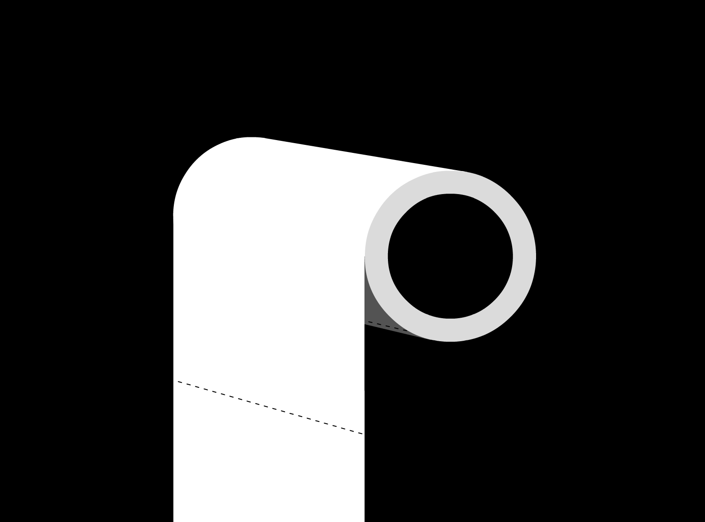

The Paper Toilet website is a website I saw on Facebook recently, the website doesn't have any purpose or do anything, but it is a interactive website that let you to roll the toilet paper.
2. Bored PandaIt is fun to navigate around the website when I am bored i guess.
3. Pop Daily TaiwanA website I look at everyday for fun facts and just to explore around for interesting trends.
4. PollockThis website allows you to paint around the screen like painting on a canvas in Jackson Pollock's painting style with a mousse. It's a really fun website.
This is a geography trivia game with Google Maps. Quite interesting to play around sometimes.
I want to take this class because I want to learn the basic of designing a website without using templates online. Website is a very important form of communication these days so it is one important element of graphic design. Therefore, I think is important for a graphic designer to learn not only the traditional medium of graphic design but also the new platform of this generation. I hope to learn topics related to html, css, and javascript coding.